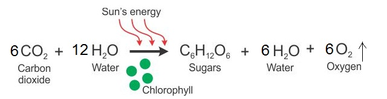
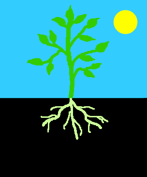

Photosynthesis
Reaction :-

Carbohydrates (glucose) are utilised for providing energy to plant.Remaining glucose which is not used are stored in form of starch that serves as reserve energy.
* Leaves are the major photosynthesis organ of a plant.
# Internal Structure of leaf:
i) Epidermis
- Outermost layer ,
Parts:-
(a)Upper Epidermis
- It is a single layer of transparent cells with no chloroplasts.It is covered by a waxy cuticle which protects internal leaf tissues by preventing excessive loss of water through transpiration.
(b)Lower Epidermis
- It contains stomata & helps in gaseous exchange and allows sunlight to pass in leaves.
ii)Stomata
- These sre tiny pores mostly found in lower epidermis of plant ,which allows gases to enter and exit in the leaf more rapidly between plant and atmosphere.

iii)Guard Cells
:-These are bean shaped cells that frame the stomatal opening . Hence , they control rate of diffusion of water and gases in and out of leaf.
#Chloroplasts
:- The Green coloured plastids contained in leaves are called chloroplats.They are the site of photosynthesis as they contain green pigment called chlorophyll which traps the solar energy from sun.They are just below upper epidermis .It is present as dot-like structure on leaves.
#Events of photosynthesis
i) Absorption of light energy by chlorophyll.
ii) Conversion of light energy into chemical energy and splitting of water molecules into hydrogen and oxygen.
iii) Reduction of carbon dioxide to Carbohydrates.
# Conditions neccesary for photosynthesis:
i)Sunlight
- It affects the rate of photosynthesis by varying its intensity,quality etc. eg.
a) Rate of Photosynthesis is minimum when light is green.
b) Rate of photosynthesis is maximum when light is red or blue.
ii)Chlorophyll
- Green color photosynthetic pigment found in chloroplast that is responsible for trapping the solor energy from sun.
# Raw material required for photosynthesis :
i) Carbondioxide:-
It is taken up through stomata from the atmosphere in case of land plants while in aquatic plants take up carbondioxide dissolved in water.
ii) Water :-
It is taken up by the roots through the process of osmosis and its transported to leaves by Kylem vessels.
iii) Other Material :-
Nitrogen iron and Mg are also required for photosynthesis taken up from soil.

# Significance Of Photosynthesis -
It not only sustains plant but indirectky provide nutrition & oxygen to other organisms as well as it provides-
a) Food - Green plants synthesis food from raw material for themselves an other organisms and thus sustain life on earth.
b) Oxygen - In process of photosynthesis oxygen is releases in airwhich is used by other organisms.